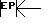

Tableau des formes d’enveloppe (R13)
| R13 Bits | GRAPHICAL REPRESENTATION OF ENVELOPE GENERATOR OUTPUT (E3 E2 E1 E0) | ||||
|---|---|---|---|---|---|
| B3 | B2 | B1 | B0 | Decimal representation |
|
| Continue | Attack | Alternate | Hold | ||
| 0 | 0 | x | x | 0,1,2,3 | ![[Envelope shape 00xx]](graphics/env01.gif) |
| 0 | 1 | x | x | 4,5,6,7 | ![[Envelope shape 01xx]](graphics/env02.gif) |
| 1 | 0 | 0 | 0 | 8 | |
| 1 | 0 | 0 | 1 | 9 | |
| 1 | 0 | 1 | 0 | 10 | ![[Envelope shape 1010]](graphics/env05.gif) |
| 1 | 0 | 1 | 1 | 11 | ![[Envelope shape 1011]](graphics/env06.gif) |
| 1 | 1 | 0 | 0 | 12 | ![[Envelope shape 1100]](graphics/env07.gif) |
| 1 | 1 | 0 | 1 | 13 | ![[Envelope shape 1101]](graphics/env08.gif) |
| 1 | 1 | 1 | 0 | 14 | ![[Envelope shape 1110]](graphics/env09.gif) |
| 1 | 1 | 1 | 1 | 15 | |
|  EP = R12 × 256 + R11 (durée d’un cycle d’enveloppe) | |||||